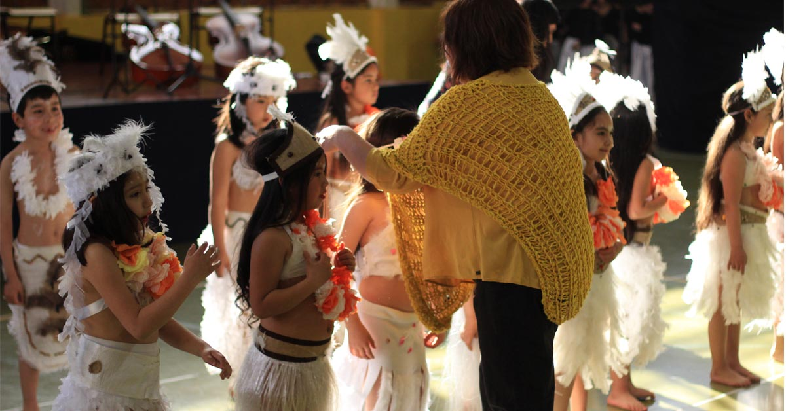
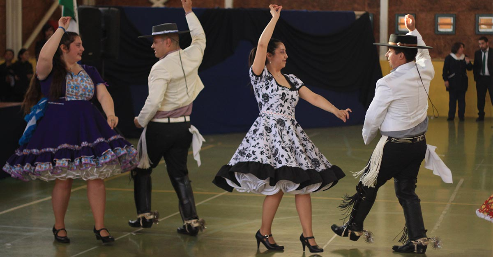
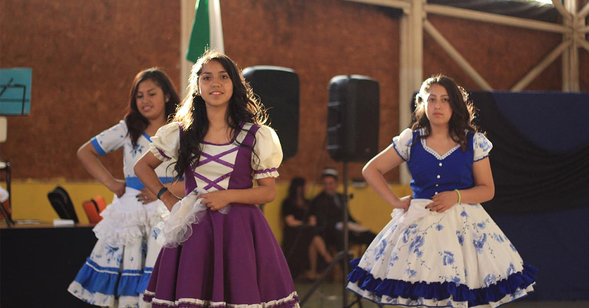
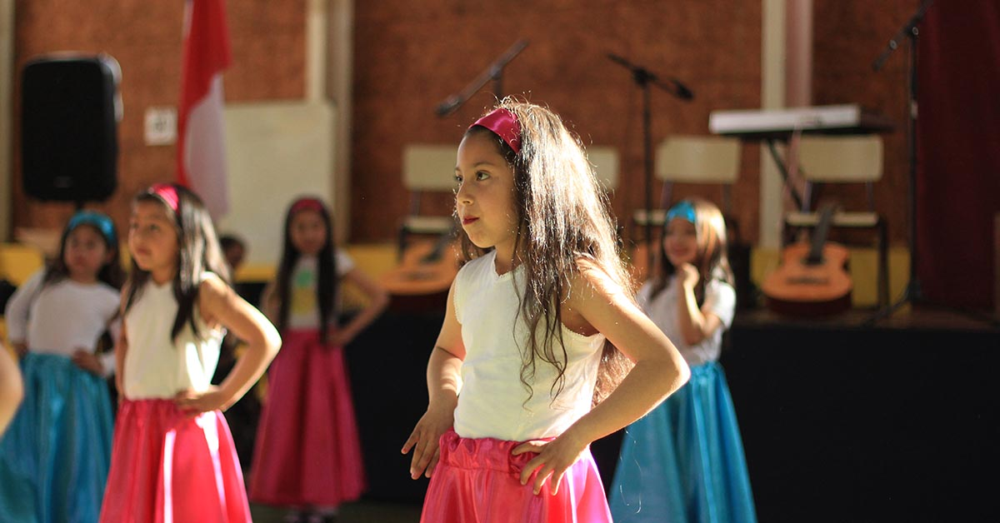
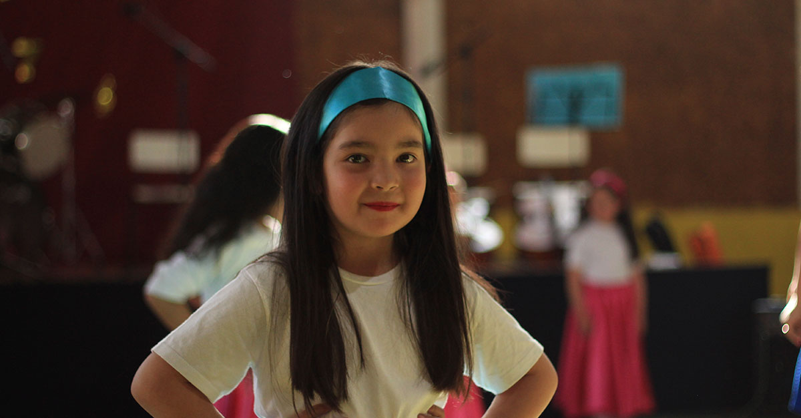

<!DOCTYPE html>
<html lang="en"></html>
<head>
  <meta charset="UTF-8"/>
  <title>Escuela Libertad Puerto Montt</title>
  <link rel="stylesheet" href="../css/noticia.css"/>
  <script src="../js/jquery-3.2.1.min.js"></script>
  <script src="../js/slide_noticia.js"></script><meta property="og:url" content="http://www.elibertad.cl/Noticias/noticia21.html" />
<meta property="og:type" content="article"/>
<meta property="og:title" content='"Velada Artística 2017 "' />
<meta property="og:description" content="Revisa acá nuestra Velada Artística 2017 ¡Con una mega galería, más de 200 fotos! <--- Ver más"/>
<meta property="og:image" content="http://www.elibertad.cl/img/noticias/noticia21/03_velada_artistica.jpg" />
</head>
<body>
  <div class="banner1"></div>
  <div class="banner2"></div>
  <section id="nav_cero">
    <div class="box_one">
      <h1>Escuela <span>Libertad</span></h1>
    </div>
    <div class="box_two">
      <nav>
        <ul>
          <li><a href="/index.html">Home</a></li>
        </ul>
        <ul>
          <li><a href="/historia.html"><span>Historia</span></a></li>
        </ul>
        <ul>
          <li><a href="/integracion.html">Integracion</a></li>
        </ul>
        <ul>
          <li><a href="/planespropios.html"><span>Talleres</span></a></li>
        </ul>
        <ul>
          <li><a href="/ProyectoEducativo.html">PEI</a></li>
        </ul>
      </nav>
    </div>
  </section>
  <!--script de fotografia--><div id="fb-root"></div>
<script>(function(d, s, id) {var js, fjs = d.getElementsByTagName(s)[0];if (d.getElementById(id)) return;js = d.createElement(s); js.id = id;js.src = 'https://connect.facebook.net/es_LA/sdk.js#xfbml=1&version=v2.11';fjs.parentNode.insertBefore(js,fjs);}(document, 'script', 'facebook-jssdk'));</script>
  <!--script de me gusta--><div id="fb-root"></div>
<script>(function(d, s, id) {
  <var>js, fjs = d.getElementsByTagName(s)[0];if (d.getElementById(id)) return;js = d.createElement(s); js.id = id;js.src = 'https://connect.facebook.net/es_LA/sdk.js#xfbml=1&version=v2.11';fjs.parentNode.insertBefore(js, fjs);}(document, 'script', 'facebook-jssdk'));</script></var>
  <div class="wrap">
    <h3>30 de Noviembre</h3>
    <div class="cabenoticia">
      <h2>Velada Artística 2017</h2>
    </div>
    <ul class="slider">
      <li></li>
      <li></li>
      <li></li>
      <li></li>
      <li></li>
    </ul>
    <ol class="pagination"></ol>
    <div class="cab__noticia">
      <h1>Presentación de danzas, bailes populares, y coreografías:</h1>
    </div>
    <div class="noticiauno">
      <div class="not__parr">
        <p>En Escuela Libertad nos reunimos  para presentar a nuestra comunidad educativa las valiosas habilidades de alumnos y alumnas de nuestro establecimiento.</p>
        <p>La danza implica la interacción de diversos elementos. Tiene la virtud de expresar sin palabras los movimientos que son sutiles o inconscientes. Desde el “Sau-Sau” a “Gracias a la vida” o la “Chica Ye-Ye” a “Sobreviviré” hasta un Tango típico de Buenos Aires, fueron algunos números que se presentaron esta noche. Nos visito el grupo folclórico “Wenuy Perun”  quienes presentaron variadas cuecas de la zona centro. </p>
        <p>No podemos dejar de lado a nuestros docentes quienes también interpretaron a sus intérpretes favoritos tal como “I’ m yours” de Jason Mraz, presentado por nuestro profesor de Inglés Maurice Darmendrail, y también, a José Mansilla, Psicologo, quien Interpreto “Aunque no sea conmigo” quien también mostro el trabajo de su taller, también se presentaron diferentes danzas típicas del País.</p>
        <p>Para finalizar, se presento el trabajo del taller de música a cargo de Miguel Epuyao quienes interpretaron canciones populares.</p>
        <p>Escuela Libertad agradece a profesores, asistentes, padres y apoderados por haber contribuido al desarrollo de esta actividad.</p>
        <p></p>
        <p>¡REVISA NUESTRA MEGAGALERÍA DE FOTOS! ¡MÁS DE 200 FOTOS!</p>
      </div>
      <!-- div para plugin fotografías--><div class="fb-post" data-href="https://www.facebook.com/media/set/?set=a.291474694677306.1073741897.100014443334294&amp;type=1&amp;l=40286de83b" data-width="500" data-show-text="true"><blockquote cite="https://www.facebook.com/media/set/?set=a.291474694677306.1073741897.100014443334294&amp;type=3" class="fb-xfbml-parse-ignore">Posted by <a href="https://www.facebook.com/esc.libertad.39">Esc Libertad</a> on&nbsp;<a href="https://www.facebook.com/media/set/?set=a.291474694677306.1073741897.100014443334294&amp;type=3">lunes, 4 de diciembre de 2017</a></blockquote></div>
    </div>
    <!-- div para plugin de Boton "Me gusta"	-->
    <div class="box__megusta"><div class="fb-like" data-href="http://www.elibertad.cl/Noticias/noticia21.html" data-layout="standard" data-action="like" data-size="small" data-show-faces="true" data-share="true"></div></div>
    <!-- div para plugin de comentario-->
    <div class="box__comentario">
      <div class="box__comentario"></div><!-- Script de Comentario-->
<script>(function(d, s, id) {var js, fjs = d.getElementsByTagName(s)[0];if (d.getElementById(id)) return;js = d.createElement(s); js.id = id;js.src = "//connect.facebook.net/es_ES/sdk.js#xfbml=1&version=v2.9";fjs.parentNode.insertBefore(js, fjs);}(document, 'script', 'facebook-jssdk'));</script><div class="fb-comments"data-href="http://www.elibertad.cl/noticias/noticia21.html" data-width="100%" data-numposts="5"></div><div id="fb-root"></div>
    </div>
    <footer>
      <div class="direccion"><span class="icon-compass"></span>
        <h1>Dirección: Iquique 230, Poblacion Libertad - Puerto Montt</h1>
      </div>
      <div class="telefono"><span class="icon-phone"></span>
        <h1>Telefono : 65 2 484525</h1>
      </div>
      <div class="mail"><span class="icon-inbox"></span>
        <h1>libertad@escuelas.dempuertomontt.cl</h1>
      </div>
      <div class="face"><a href="https://www.facebook.com/esc.libertad.39"><span class="icon-facebook-official"></span></a></div><span class="icon-youtube-square"></span>
    </footer>
  </div>
</body>